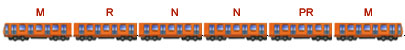

Conformación de un tren del metro
El Sistema de Transporte Colectivo conforma sus trenes de la siguiente manera:
Cada tren también llamado convoy, está compuesto por nueve carros. Seis de ellos son motrices, es decir, que tienen tracción propia y entre todos arrastran al convoy; ocupan las posiciones 1, 3, 4, 6, 7 y 9. Los trenes restantes son remolques (R),es decir sin tracción propia.
M: Representa a los carros motrices equipados con cabina de conducción y con tracción propia.
N: Representa a los carros motrices que con tracción propia y sin cabina de conducción.
R: Representa a los carros remolques.
PR: Representa al carro remolque central que cuenta con el equipo del sistema de pilotaje automático.
Los convoyes de 6 carros, 4 de ellos son motrices y 2 remolques. Esta formación puede aumentarse a 9 carros, dependiendo de la demanda de transporte.
Cuerpo del carro
Al cuerpo del carro, donde viajan los pasajeros, se le llama caja. La caja de los carros va montada sobre dos carretillas portadoras, llamadas boguies. En el caso de los carros motrices, cada boguie va equipado con dos motores de tracción -un total de cuatro por cada carro motriz-. Los boguies de los carros remolque carecen de motor, los carros motrices toman la corriente de la barra guía, de 750 volts, mediante las escobillas, situadas entre las dos ruedas de cada boguie.
Bajo las cajas de los carros motores, entre los boguies, van colocados los equipos que regulan el funcionamiento de los motores de tracción. Bajo la caja de los carros remolque están instalados:
- El compresor, que produce el aire a presión para el frenado neumático y el cierre de puertas.
- El compresor, que produce el aire a presión para el frenado neumático y el cierre de puertas.
- El banco de baterías, que generan corriente de baja tensión (72 volts), para los circuitos de mando del tren.
- En el remolque que ocupa la posición intermedia va instalado el captor del pilotaje automático.
Los trenes son de rodadura de acero, tipo ferroviario (se denominan férreos, ya que no cuentan con llantas o neumáticos) y están integrados, cada uno, por seis carros, de los cuales 4 son motrices, 2 remolques y de igual forma que los convoyes de rodadura neumática, uno de ellos está equipado con el sistema de pilotaje automático.
En los trenes férreos la alimentación es por catenaria con 750 VCD (en forma similar a los trolebuses, por medio de un cable de cobre o aluminio, soportado con aisladores) y la toma de alimentación es por medio de un mecanismo de pantógrafo, con un patín de rozamiento de carbón. Las ruedas metálicas, en acero forjado, realizan la misma función de guiado y transmiten los esfuerzos de tracción - frenado.